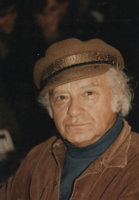

(1925 – 2005)

Her biri birbirinden güzel şiirleri ve ulusal bağımsızlık alanında ödün tanımaz düşünce yazılarıyla ülkemizin ufkunu genişleten yazarlardan olan Attila İlhan yazdığı romanlarla da Türk edebiyatına çok şey kattı. Gerek biçim gerek içerik açısından hayli farklı olan romanları bize kendi tarihimizi "aynanın içinden" gösterme çabasındaydı.
Şiirleri, düşünce yazıları ve romanlarıyla ülkemizin en tanınan ve sevilen yazarlarından biri olan Attila İlhan, 15 Haziran 1925'te İzmir'de, Menemen'de dünyaya geldi. Tam adı Attila Hamdi İlhan'dır. İlk ve orta öğretiminin büyük bir bölümünü İzmir ve babasının işi dolayısıyla gittikleri farklı bölgelerde tamamladı. İzmir Atatürk Lisesi birinci sınıfındayken mektuplaştığı bir kıza yazdığı Nazım Hikmet şiirleriyle "yakalandığı" için 1941 Şubat'ında, 16 yaşındayken tutuklandı ve okuldan uzaklaştırıldı. Üç hafta gözetim altında kaldı, iki ay hapiste yattı. Türkiye'nin hiçbir yerinde okuyamayacağına dair bir belge verilince eğitim hayatına ara vermek zorunda kaldı. Okuma hakkını 1944 yılında danıştay kararıyla tekrar kazandı ve İstanbul Işık Lisesi'ne kaydını yaptırdı. Lise son sınıftayken amcasının kendisinden habersiz biçimde CHP Şiir Yarışması'na gönderdiği Cabbaroğlu Mehemmed şiiriyle o dönemin pek çok ünlü şairini geride bırakarak ikincilik ödülünü kazandı. 1946'da liseden mezun oldu, İstanbul Hukuk Fakültesi'ne kaydoldu. Üniversite hayatının başarılı geçen yıllarında Yığın ve Gün gibi dergilerde ilk şiirleri yayınlanmaya başladı. 1948'de ilk şiir kitabı Duvar'ı kendi imkanlarıyla yayımladı.
1949 yılında, üniversite ikinci sınıftayken şair Nazım Hikmet'i kurtarma hareketine katılmak üzere ilk kez Paris'e gitti. Bu harekette aktif rol oynadı. Fransız toplumu ve orada bulunduğu çevreye ilişkin gözlemleri, daha sonraki eserlerinde yer alan birçok karakter ve olaya temel oluşturmuştur. Türkiye'ye geri dönüşünde sıklıkla başı polisle derde girdi, birkaç kez gözaltına alındı. Sansaryan Han'daki sorgulamalar; ölüm, tehlike, gerilim temalarının işlendiği eserlerinde önemli rol oynamıştır.
1951 yılında Gerçek gazetesindeki bir yazısından dolayı kovuşturmaya uğrayınca tekrar Paris'e gitti. Burada Fransızca öğrendi Marksizm'le tanıştı. 1950'li yılları İstanbul - İzmir - Paris üçgeni içerisinde geçiren Attila İlhan, bu dönemde adını yavaş yavaş Türkiye çapında duyurmaya başladı. Yurda döndükten sonra Hukuk Fakültesi'ne devam etti. Ancak son sınıfta gazeteciliğe başlayarak öğrenimini yarıda bıraktı. Sinemayla olan ilişkisi yine bu dönemde, 1953'te Vatan gazetesinde sinema eleştirileri yazmasıyla başladı.
1957'de gittiği Erzincan'da askerliğini yaptıktan sonra tekrar İstanbul'a dönen Attila İlhan, sinema çalışmalarına ağırlık verdi. On beşe yakın senaryoya "Ali Kaptanoğlu" adıyla imza attı. Sinemada aradığını bulamayınca 1960'ta Paris'e geri döndü. Sosyalizmin geldiği aşamaları ve televizyonculuğu incelediği bu dönemin ardından, babasının ölmesiyle birlikte İzmir'de yaşamaya başladı. İzmir'de kaldığı sekiz yıl soyunca Demokrat İzmir gazetesinin başyazarlığını ve genel yayın yönetmenliğini yaptı. Aynı yıllarda şiir kitabı Yasak Sevişmek ve Aynanın İçindekiler roman serisinden Bıçağın Ucu yayınlandı. 1968'de evlendi, on beş yıl evli kaldı.
1973'te Bilgi Yayınevi'nin danışmanlığını üstlenerek Ankara'ya taşındı. Sırtlan Payı ve Yaraya Tuz Basmak romanlarını Ankara'da yazdı. 1981'e kadar Ankara'da kalan yazar Fena Halde Leman adlı romanını tamamladıktan sonra İstanbul'a yerleşti. İstanbul'da gazetecilik serüveni Milliyet ve Gelişim Yayınları ile devam etti. Bir süre Güneş gazetesinde yazan Attila İlhan, 1993-1996 yılları arasında Meydan gazetesinde yazmaya devam etti. 1996 yılından itibaren köşe yazılarını Cumhuriyet gazetesinde sürdürdü. 1970'lerde Türkiye'de televizyon yayınının başlaması ve geniş kitlelere ulaşmasıyla beraber Attila İlhan da tekrar senaryo yazmaya başladı. Senaryolarını yazdığı Sekiz Sütuna Manşet, Kartallar Yüksek Uçar ve Yarın Artık Bugündür halk tarafından beğeniyle izlenilen diziler oldu.
Attila İlhan ilk kalp krizini 1985 yılında geçirdi. Bu tarihten sonra kardiyolojik sorunları devam eden İlhan'ın 2004'ten itibaren sağlık durumu daha da bozuldu. 10 Ekim 2005'te İstanbul'daki evinde geçirdiği ikinci kalp krizi sonucu hayata veda ettiğinde 80 yaşındaydı. Şair ve yazar Attila İlhan'ın kabri İstanbul'da, Aşiyan Mezarlığı'nda bulunmaktadır.
Romanları: Sokaktaki Adam (1953), Zenciler Birbirine Benzemez (1957), Kurtlar Sofrası (1963), Bıçağın Ucu (1973), Sırtlan Payı (1974) Yaraya Tuz Basmak (1978), Fena Halde Leman (1980), Dersaadet'te Sabah Ezanları (1981), Haco Hanım Vay (1984), O Karanlıkta Biz (1988), Allah'ın Süngüleri: Reis Paşa (2002), Allah'ın Süngüleri: Gazi Paşa (2006), O Sarışın Kurt (2007)